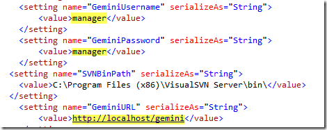
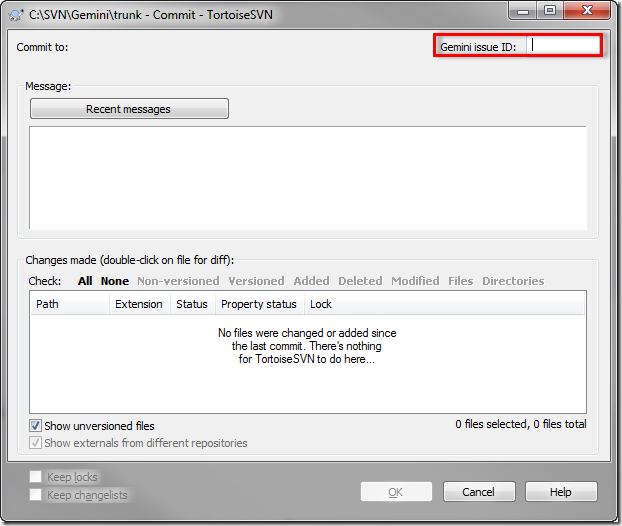

Download the SVN connector.
Place the following files into "hooks" folder of your Subversion repository.
Files to be copied.
Configure your Gemini url, username and password in the Countersoft.Gemini.SourceControl.SVN.exe.config file.

Set SVN Project Properties for every project you want to associate with Gemini and Click on the import button.
Import the 'gemini_svn.svnprops' file which will be located in the 'SVN Properties' folder. Once imported, change the 'bugtraq:url' to point towards your Gemini installation by double clicking on the URL.
When you want to tie a subversion commit to an issue, simply place the issue number in the subversion commit comment box or the Gemini issue ID box and press ok.

All commited files and comments appear under Code Review as follows.